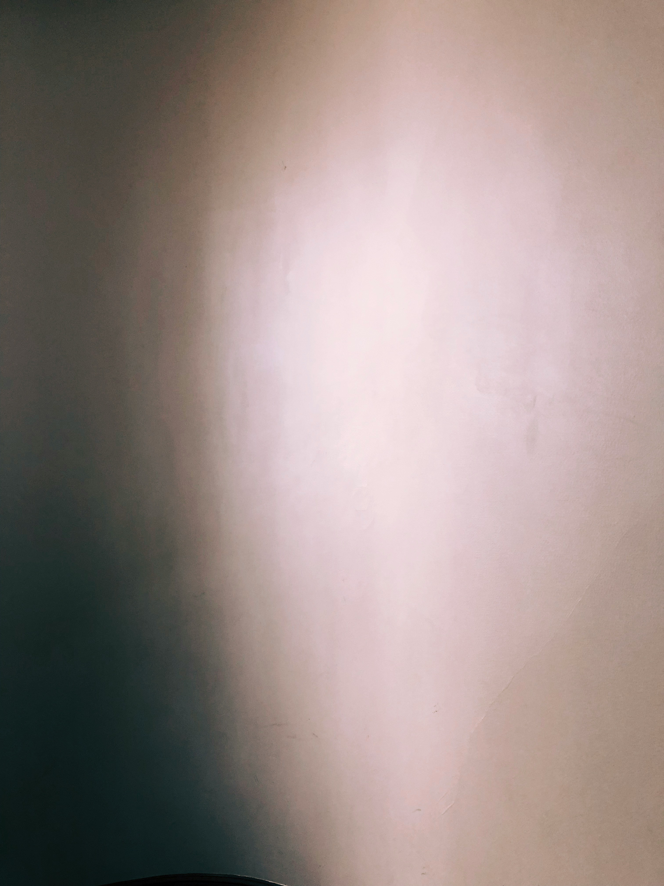

르누아르는 항상 그가 본 것을 새로이 변형했는데, 이 작품에서는 자연과 인공적인 것이 조화로이 보이도록 노력했다. 예를 들어 인물 뒤의 잎사귀들은 어린 소녀들의 모자를 장식하고 있는 조화에 못지 않다. 야외 배경이라는 맥락에서는 약간 벗어나 있지만, 바구니 안에 들어있는 실꾸러미로 된 공 또한 작가의 팔레트에 있는 색과 그의 기술을 효율적으로 활용하고 있다. 1882년에 열린 일곱 번째 인상파 전시에서 선보인 이 작품은 르누아르가 인상파가 보여주던 나부끼는 붓터치에 의한 일시적인 빛의 효과라는 편향된 성향에서 벗어나려고 하고 있음을 보여주고 있다.
